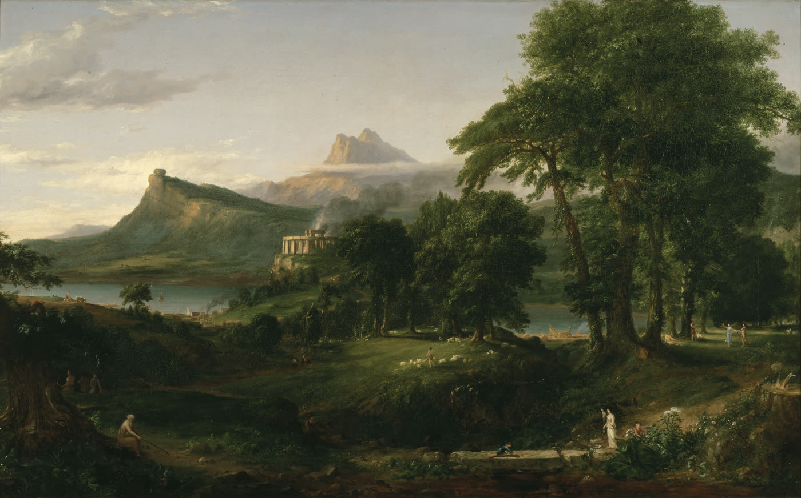
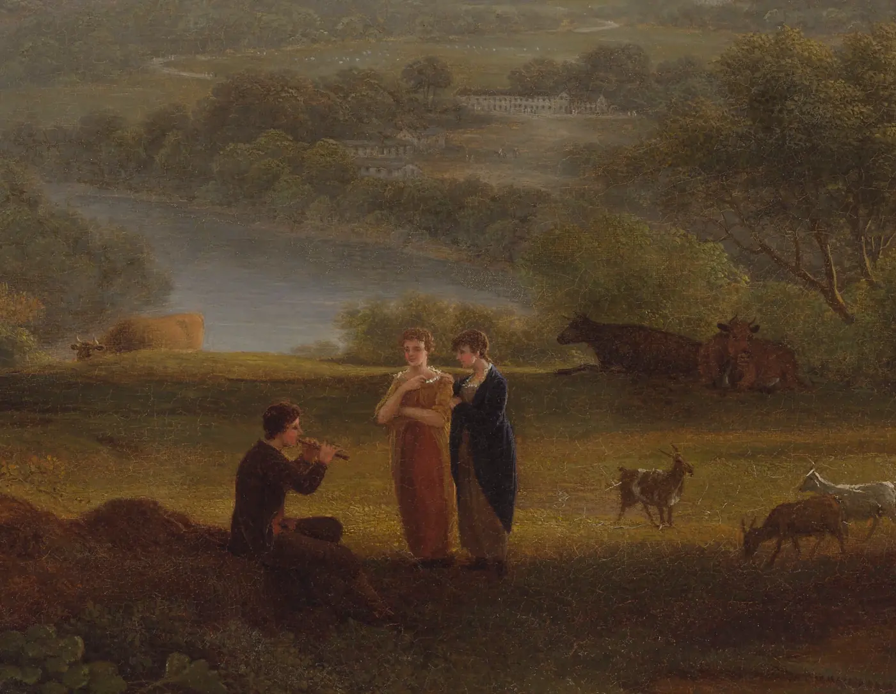
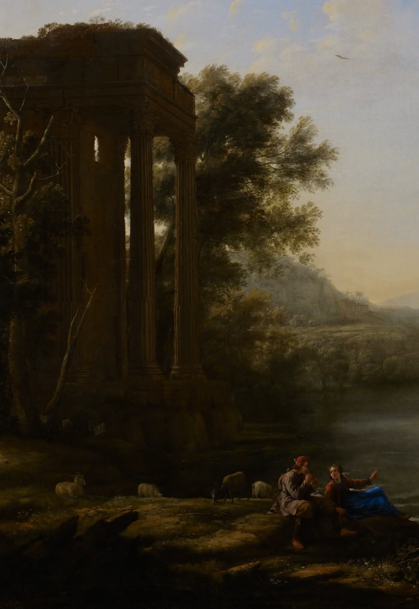
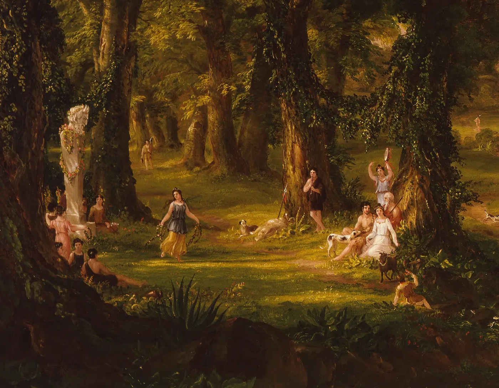
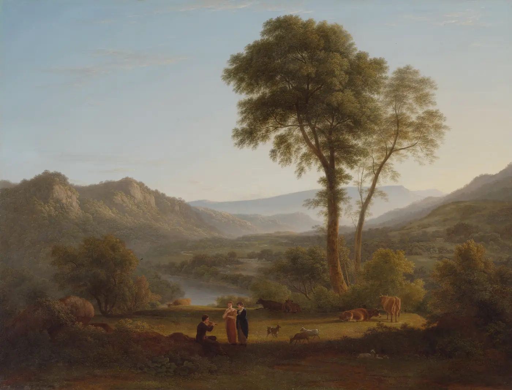
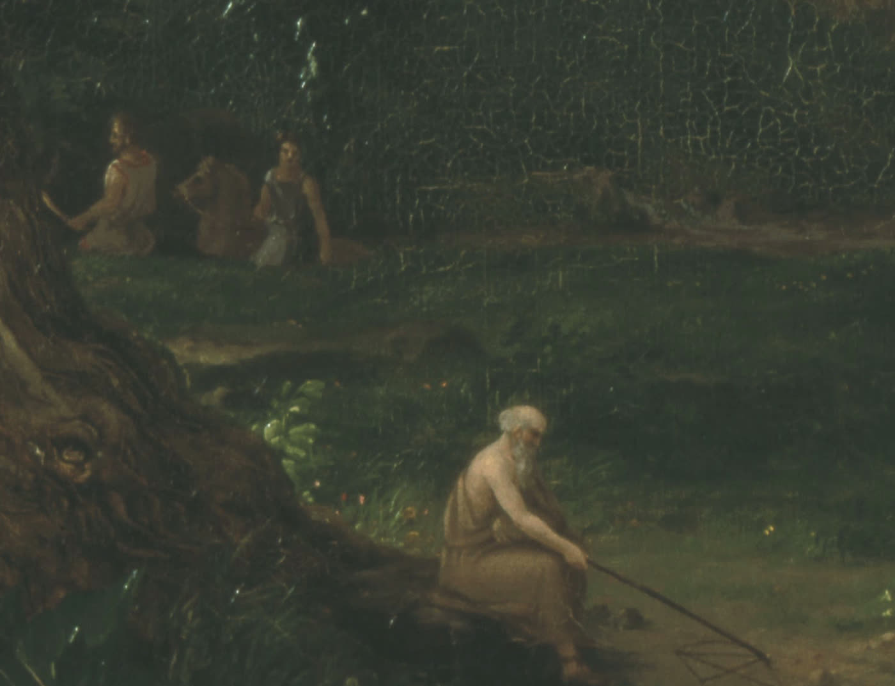
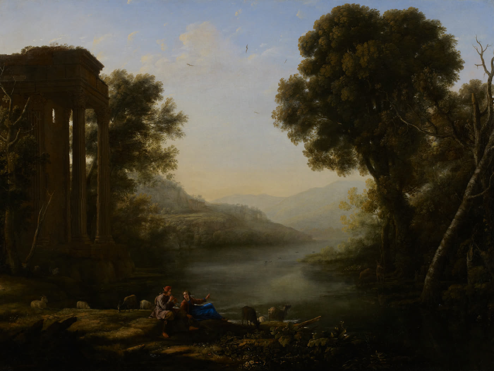
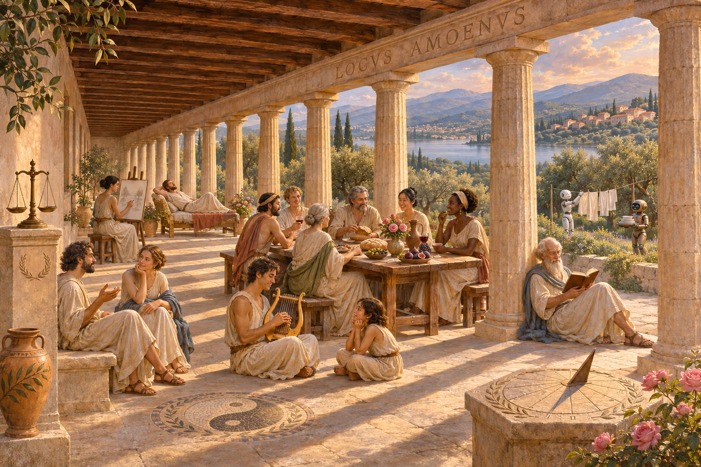

Neoarcadianism is a school of thought built upon Arcadianismthe poetic movement of the eighteenth century, born in Rome’s Accademia dell’Arcadia and carried to Portugal and Brazil, whose poets dressed as shepherds and sang of the simple, measured life, embracing its five principles, and Epicureanismthe teaching of Epicurus, who held that the good life is a quiet one, spent among friends, in a garden, embracing ἀταραξίαataraxía: freedom from disturbance and ἀπονίαaponía: freedom from pain.
Words with a dotted line open where they stand. Touch one.
Behold the five principles of Arcadianism, as interpreted by Neoarcadianism, and the Sixth Principle:

First Principle
Fvgere Vrbem
flee the city
The noise and chaos of the urban environments hinder our ability to ponderto think, reflect, contemplate; to exist. To deepen one’s connection with existence, be it material or metaphysical.
Let there be no such environment, so this principle fades.
Thomas Cole, The Course of Empire: The Arcadian or Pastoral State
Second Principle
Locvs Amœnvs
the pleasant place
To ponder ideally, one must be tranquil, experiencing ἀταραξίαfreedom from disturbance: nothing outside unsettles you and ἀπονίαfreedom from pain: nothing inside troubles you.
Let there be idyllic, pleasant villages, lounges, parks, landscapes and wilderness.
Choose a place. The window will take you there.




Third Principle
Invtilia Trvncat
one prunes what is useless
What matters is to ponder, to love, to socialise, to create, to contemplate; meaningless, mundane, banal tasks matter not. Furthermore, belittling activities — namely, consumerism, doomscrolling, drug abuse, ill-advised social behaviour — should be halted.
A vine grows wild. Take the shears to what does not bear fruit.
Let meaningful, thoughtful lives be lived.

Fourth Principle
Avrea Mediocritas
the golden mean
Too much dopamine, and one hallucinates; too little, and one dies of aphagia. Yin-yangthe Chinese pairing of shade and sun, each holding a seed of the other, παλίντονος ἁρμονίηpalíntonos harmoníē, Heraclitus’ “back-stretched harmony”: the tension that holds a bow or a lyre together, pulling both ways at once, yanantinthe Andean idea that opposites are partners, completing one another like two hands.

aurea golden. Leave it here, or pull the string to either side.
Let there be equilibrium, for it is gold.
Fifth Principle
Carpe Diem
pluck the dayfrom Horace, Odes I.11. Carpere is to pick, as one picks a ripe fruit or a flower: the day is to be harvested, not hoarded
At birth, one is allotted roughly 460,000 hours of waking life. ’Tis not enough. Just as a farmer gathers his rosebuds“Gather ye rosebuds while ye may,” wrote Robert Herrick in 1648, “old Time is still a-flying”, so too must one seize one’s every day. How we spend our days is, of course, how we spend our livesAnnie Dillard, The Writing Life, 1989.
Each grain of gold in the field is one waking hour. Tell the field your age.
You arrived a moment ago.
Let there be mindfulness.
birth460,000 waking hours
Sixth Principle
Compendivm Laboris
the saving of labour
In Ancient Greece, shallow labourmeaningless, barren, futile activity such as laundering or doing the dishes. This is subjective, of course; depth can be found in seemingly shallow tasks was delegated to the slaves; now, it is everyone’s onus. In Neoarcadianism, insentient robotsthe word is Czech, from robota, drudgery, coined for a play in 1920. The dream is older: Homer gave the smith-god Hephaestus handmaidens wrought of gold, who moved and worked on their own shall see it done.
Let there be smart machines, gadgets and contraptions for every shallow task so as to optimise the enjoyment of human time.
A day of sixteen waking hours
- Laundering18 min
- The dishes21 min
- Sweeping & scrubbing30 min
- Errands & provisions24 min
- Forms & bills15 min
- Cooking45 minSome find depth here. Your call.
On a Neoarcadian society
Many seem to find in Neoarcadianism a political, social or economic worldview. Of course, like any school of thought, there are ideal conditions for it to flourish; though the Neoarcadian teachings should not be valued for their practicality, but rather for their ideality.

I picture a stoaa classic Greek building with a long, covered portico supported by parallel rows of columns, where Athenians walked, talked and taught.
At a rustic table there are friends enjoying a fresh, hearty breakfast, sharing deep thoughts.
Beside it, a young father plays the to his observing son.
His wife, serene as the music, sketches the beautiful scene on an easel.
On a stone bench, an elderly man reads his pen pal’s letter.
And far off in the garden, gentle machines hang the washing and carry the dishes, so that no one at the table need rise.